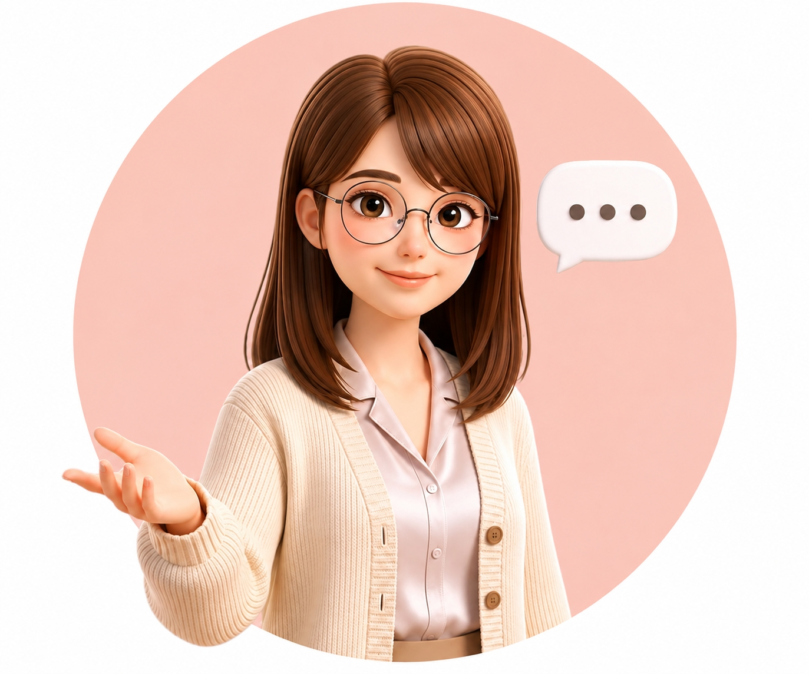

今天的心理活动课
走进初中，
拥抱新起点
新生活会带来期待，也可能有一点陌生和不确定。今天，我们不急着解决什么，先花一点时间看看自己。
今天送给自己的一句话：
适应不是比赛，慢慢来也是在前进。
适应不是比赛，慢慢来也是在前进。
课堂约定：没有标准答案；你可以表达，也可以先安静地想一想。
新生活 · 第一周给自己一点适应的时间
故事导入 · 01
小雅的第一周
我想加入，
可是会不会很突然？
可是会不会很突然？
周三课间 · 小雅停在走廊边
先聊聊她，不急着谈自己
小雅拿着水杯经过一群正在聊天的同学。她听见他们在聊周末的活动，也想靠近一点，可脚步停住了。
如果你站在小雅旁边，你觉得她现在最需要的是什么？私密对话 · 02
把心里的话，
说一点出来
小悦悦会顺着你的表达陪你想一想。这里没有预设答案，也不在班级公开。

小悦悦你的课堂对话伙伴
体验练习 · 03
给自己两分钟，
慢一点。
刚才我们一起想到：紧张出现时，可以先停一停，让身体回到此刻。你不需要强迫自己放松。
准备
吸气 4 拍，呼气 4 拍。小悦悦会陪你数两轮。
课末收束 · 04
这一节课后，
你现在是什么颜色？
不用判断自己有没有变好。只是停下来，看看此刻的心情。
选一种最接近现在的颜色
没有对错，也不需要解释。
今天不一定要把所有不确定都解决。
你愿意停下来看看自己，已经是在慢慢适应新生活。